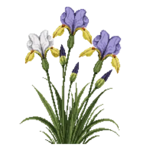

Pacific Coast Iris
Iris douglasiana

Pacific Coast Iris is a perennial for edging, mid-border, suited to full sun to partial shade and clay, loam, sandy soil or moist ground, flowering Mar, Apr, May.
| Type | Perennial |
|---|---|
| Mature height | 60 cm |
| Spread | 60 cm |
| Aspect | full sun to partial shade |
| Foliage | Evergreen |
| Hardiness | USDA 8a-10b |
| Pollinator-friendly | Yes |
| Pet-safe | No |
Where to use it in a border
At around 60 cm, it sits best along the front edge, where a low, spreading habit reads best. Give it about 60 cm of room to spread. It is hardy across USDA zones 8a to 10b, so check it suits your area before planting.
It appears in our lists of full sun, clay soil, sandy soil, wet soil, evergreen plants, pollinator-friendly plants.
Flowering through the year
Worth knowing
- Evergreen, so it keeps the border furnished through winter.
- Not recorded as pet-safe; site it away from pets that graze if that matters to you.
- Its flowers are valued by bees and other pollinators.
Good companions
Plants that share its conditions and style, chosen to complement its place in the border:
- Bee's Bliss Sageto edge in front
- CA Meadow Sedgeto edge in front
- Catalina Perfumeto edge in front
- Chalk Liveforeverto edge in front
- Coast Silktasselfor height behind it
- Coffeeberryfor height behind it
Garden styles
Coastal Modern Native Woodland Xeriscape (low-water)
See Pacific Coast Iris set in a full border, with spacing and companions worked out for your own conditions, in Border Builder.